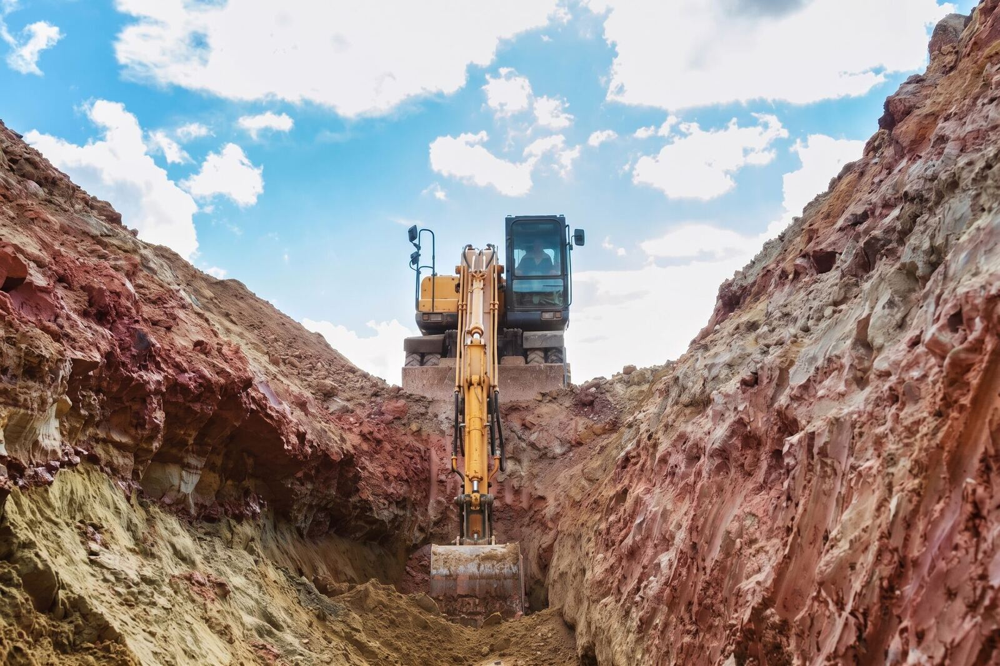

L'area dell'ex stabilimento SGL Carbon ad Ascoli Piceno è un compendio industriale di circa 250.000 metri quadri, destinato alla produzione di elettrodi in grafite e oggi dismesso.
Subentrando al primo progettista nella redazione del Progetto Operativo di Bonifica, abbiamo rivisto l'impostazione dell'intervento: la stima del costo della bonifica è passata da circa 34 milioni di euro a circa 10 milioni.
Il margine è venuto in larga parte dal decommissioning propedeutico: circa 80.000 metri cubi di materiali da demolizione vengono trattati e recuperati direttamente in sito, anziché essere classificati come rifiuto e allontanati.